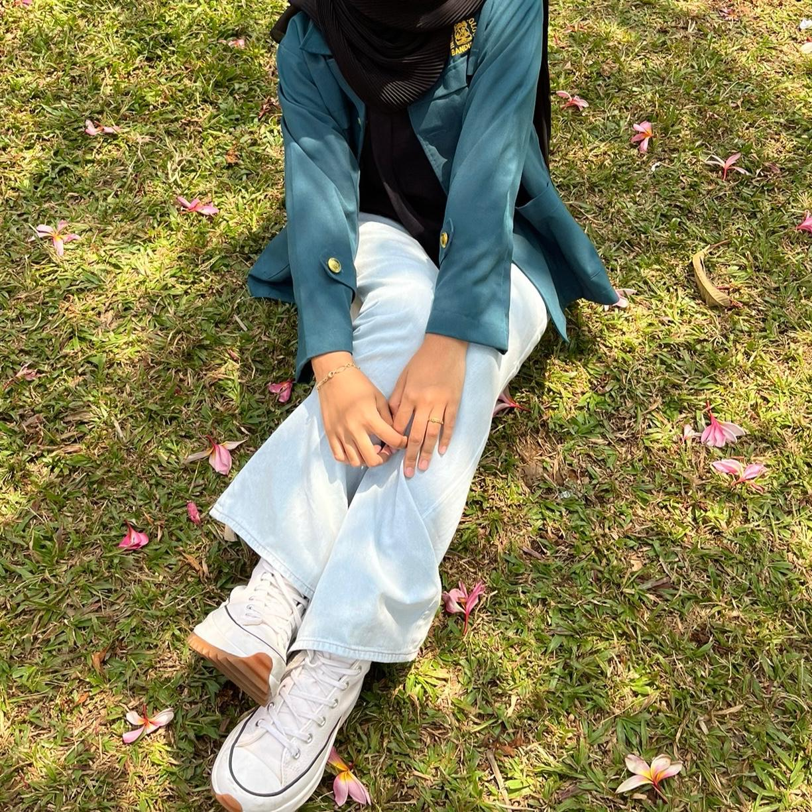
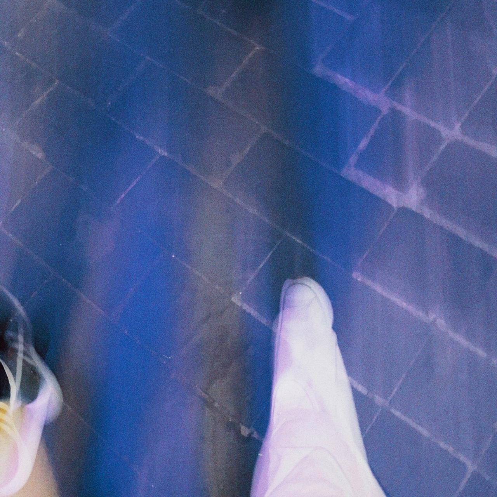
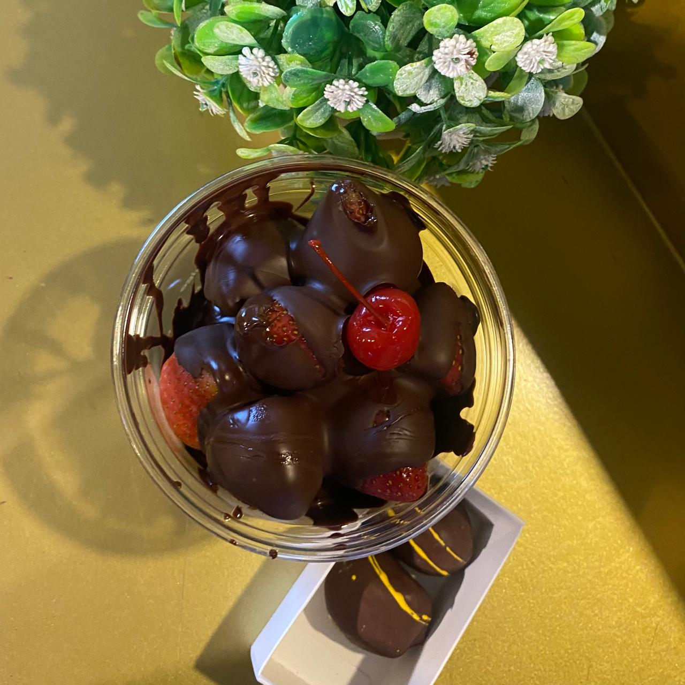

Welcome!

Halo, semuanyaa! Website ini aku buat sebagai bagian dari mata kuliah II-2100 Komunikasi dan Interpersonal Publik, dari program studi Sistem dan Teknologi Informasi, Institut Teknologi Bandung (ITB).
Melalui halaman ini, aku ingin berbagi perjalanan belajar dan refleksi pribadi tentang bagaimana komunikasi bukan hanya soal berbicara, tapi juga tentang understanding, connection, dan growth.
Untuk aku, komunikasi yang baik bukan hanya membuat orang lain paham apa yang kita maksud, tetapi juga membuat kita lebih mengenal diri sendiri.
UTS 1: All About Me
Who I Am and How I See MySelf
Hi! Nama aku Indah Ramadhani dan biasa dipanggil Indah. I'm currently learning more about myself, especially how i connect and communicate with others. Sebenernya, kalau aku lihat ke dalam diri sendiri, aku itu bukan tipe orang yang langsung terbuka ke siapapun. Aku butuh waktu untuk merasa nyaman sebelum bisa benar-benar jadi diri sendiri, kadang aku terlalu mikir sebelum ngomong, takut kalau disalahpahami ataupun salah tangkap. Tapi seiring waktu, aku belajar bahwa komunikasi yang baik itu bukan tentang kesempurnaan, tapi tentang keberanian untuk jujur. Being real is better than being perfect. Sekarang aku lebih berusaha untuk ngomong apa adanya, sambil tetap menghargai orang lain.
Aku juga sadar bahwa setiap orang punya cara komunikasi yang unik. Aku lebih cenderung menjadi pendengar dulu, baru berbicara. Cara itu membuat aku lebih peka, tapi kadang juga bikin aku kehilangan kesempatan untuk mengekspresikan pendapatku. Nah, dari situ aku mulai belajar bahwa komunikasi adalah keseimbangan antara mendengarkan dan mengungkapkan diri.
My Communication Journey
Semenjak aku belajar terkait mata kuliah ini, aku mulai sadar pola dan kebiasaan komunikasiku. Aku sering menghindari konflik karena nggak mau susana jadi kurang enak, padahal kadang honest talk justru bisa memperbaiki hubungan. Dari situlah aku mulai berlatih untuk speak with kindness, not fear. Aku juga belajar bahwa komunikasi bukan hanya soal berbicara, tapi juga how we show up for others. Hal sekecil seperti mendengarkan dengan tulus atau menatap mata lawan bicara bisa menunjukkan perhatian lebih dari seribu kata.
Selain itu, aku jadi paham pentingnya self awareness. Dengan mengenali emosi sendiri, aku bisa lebih tenang saat bicara dan lebih ngerti kenapa aku bereaksi dengan cara tertentu. Misalnya, kalau aku lagi marah, aku sekarang coba pause dulu, bukan untuk menahan diri, tapi supaya bisa memilih respon yang lebih baik.
Reflection and Growth
Melalui proses ini, aku sadar kalau memahami diri sendiri adalah langkah pertama untuk membangun komunikasi yang sehat. Empati dan kejujuran jadi dua hal yang paling berharga buatku. Empati bikin aku bisa memahami orang lain lebih dalam, sedangkan kejujuran bikin hubungan jadi lebih tulus dan ringan. Aku juga belajar menerima bahwa kadang aku bisa salah, bisa gugup, atau bahkan diam, dan itu nggak apa-apa. Growth takes time . Yang penting aku terus belajar dan berusaha untuk hadir sepenuhnya dalam setiap percakapan.
In the end, “All About Me” bukan cuma tentang mendeskripsikan siapa aku hari ini, tapi juga tentang proses aku menjadi versi diriku yang lebih baik, one conversation at a time. 🌱
UTS 2: My Songs for You
"Iris" by Goo Goo Dolls
The Song That Hits Different
Dari sekian banyak lagu yang pernah aku dengar, “Iris” by Goo Goo Dolls selalu punya tempat spesial. Lagu ini terdengar klasik, tapi setiap kali aku dengar ulang, rasanya tetap hangat dan real. Buatku, lagu ini bukan cuma tentang cinta, tapi tentang keinginan untuk be understood, not just seen.
Bagian yang paling kena itu waktu liriknya bilang:
“I just want you to know who I am.”
Kalimat sesederhana itu bisa jadi refleksi paling jujur dari hati seseorang yang pengin dipahami tanpa topeng. Kadang kita juga ingin hal yang sama, nggak harus dimengerti sepenuhnya, tapi cukup ada seseorang yang benar-benar mau tahu siapa kita tanpa menilai. Lagu ini ngingetin aku bahwa jujur sama diri sendiri itu juga bentuk komunikasi. Karena sering kali kita terlalu sibuk buat terlihat “baik-baik aja,” padahal yang kita butuhin cuma ruang buat jadi diri sendiri.
Reflection: When Words Fail, Music Speaks
Setiap kali aku denger “Iris”, rasanya kayak ngobrol sama diri sendiri di tengah malam yang tenang. Suaranya lembut tapi emosional, dan cara Goo Goo Dolls nyanyiin setiap baitnya bikin liriknya terasa hidup. Lagu ini buat aku jadi pengingat bahwa nggak semua hal bisa dijelaskan lewat kata-kata. Sometimes, the heart just speaks louder than the mind. Dan di situ, musik jadi jembatan antara yang nggak bisa diucapkan dan yang tetap ingin disampaikan. Aku juga ngerasa, lagu ini ngajarin bahwa vulnerability bukan kelemahan. Justru keberanian terbesar datang dari saat kita berani menunjukkan sisi yang paling manusiawi, meski dunia kadang nggak ngerti.
The Lyrics: Between Love, Fear, and Truth
Kalau diperhatiin, lirik “Iris” sebenarnya penuh kontras, antara cinta dan ketakutan, antara keinginan untuk dekat tapi juga takut terluka.
Lirik seperti:
“And I don’t want the world to see me, ‘cause I don’t think that they’d understand”
itu menggambarkan rasa ragu yang sering banget dirasain banyak orang: ingin dipahami, tapi takut nggak diterima.
Aku pribadi ngerasa itu sangat manusiawi. Karena kadang kita menahan diri buat jujur, bukan karena nggak mau, tapi karena takut dunia nggak siap buat tahu versi asli kita.
Lagu ini juga ngasih makna bahwa cinta sejati itu bukan tentang kesempurnaan, tapi tentang penerimaan. Bahwa kita nggak perlu selalu bersinar terang, cukup jadi diri sendiri, dan itu udah cukup indah.
It’s the honesty that makes us real, not perfection.
UTS 3: My Stories
A Quiet Talk with Myself
Akhir-akhir ini, aku mulai sadar kalau tumbuh itu bukan tentang seberapa cepat kita bisa sampai di tujuan, tapi tentang gimana kita belajar berdamai dengan diri sendiri di tengah perjalanan.
Kadang aku ngerasa harus selalu kuat, selalu produktif, selalu baik-baik aja, padahal nggak selalu bisa begitu. Ada hari di mana aku cuma pengen diam, rebahan, atau sekadar duduk sambil denger lagu tanpa mikir apa pun.
Dulu aku nganggep itu tanda lemah, tapi ternyata nggak. Itu tanda kalau tubuh dan hati cuma lagi minta istirahat. Sometimes, pausing doesn’t mean giving up. It just means you care enough to listen to yourself.
Embracing the Mess
Hidup itu seringkali berantakan, and that’s okay.
Aku dulu orang yang suka banget ngatur semua hal biar rapi, biar nggak ada yang keluar jalur. Tapi semakin dewasa, aku sadar kalau nggak semua hal bisa dikendalikan. Ada hal-hal yang harus dijalani tanpa peta, tanpa rencana pasti.
Kadang chaos itu bukan musuh, tapi guru. Dari situ aku belajar sabar, belajar ikhlas, dan belajar nerima bahwa nggak semua hal harus “sempurna” buat tetap berarti.
Kehidupan nggak selalu harus linear. Kadang jalan berliku justru yang ngajarin kita paling banyak hal tentang kehilangan, tentang sabar, tentang gimana caranya tetap jadi diri sendiri walau dunia terus berubah.
Finding Peace in Small Things
Sekarang aku mulai belajar nemuin tenang dari hal-hal kecil: dari aroma kopi pagi, suara hujan di jendela, atau senyum orang yang tulus tanpa alasan.
Dulu aku pikir bahagia itu harus besar dan heboh, tapi ternyata nggak selalu. Peace isn’t always loud, sometimes it’s found in silence.
Dan mungkin itu yang disebut dewasa: bukan soal tahu semua jawaban, tapi tahu gimana cara berdamai sama hal-hal kecil yang sebelumnya kita anggap sepele.
Karena pada akhirnya, kedamaian nggak datang dari kesempurnaan, tapi dari penerimaan.
UTS 4: My SHAPE
SHAPE adalah akronim dari Spiritual Gifts, Heart, Abilities, Personality, dan Experiences.
| Aspek | Deskripsi |
|---|---|
| S (Strengths) | Memiliki kekuatan dalam empati, kreativitas, dan kemampuan mendengarkan. Dapat memahami perasaan orang lain dengan baik dan memberikan dukungan secara bijak. |
| H (Hopes) | Berharap dapat menjadi pribadi yang lebih sabar dan berpengaruh positif bagi lingkungan sekitar, terutama dalam membantu orang lain menemukan potensi terbaiknya. |
| A (Actions) | Aktif dalam kegiatan sosial dan kerja tim, senang memfasilitasi komunikasi antaranggota kelompok, serta berusaha menjadi pendengar yang baik dalam setiap interaksi. |
| P (Purpose) | Menemukan makna hidup melalui kontribusi nyata terhadap sesama, terutama dengan cara membangun relasi yang sehat dan memberikan inspirasi lewat tindakan. |
| E (Environment) | Lingkungan ideal adalah tempat yang mendukung keterbukaan, empati, dan kerja sama. Suka suasana yang tenang namun kolaboratif, di mana setiap orang saling menghargai. |
Narrative Identity
Identitas naratifku terbentuk dari perjalanan memahami makna “menjadi diri sendiri” di tengah ekspektasi banyak orang. Aku belajar bahwa nggak apa-apa untuk berbeda karena justru di situlah nilai keunikanku muncul. Dalam berbagai pengalaman, baik yang menyenangkan maupun penuh tantangan, aku menemukan bahwa empati adalah kekuatan yang menuntunku untuk tetap manusiawi.
Melalui refleksi diri dan hasil asesmen VIA, aku sadar kalau hal-hal yang paling membuatku hidup bukan tentang pencapaian besar, tapi tentang hubungan yang tulus dengan orang lain. Itulah kenapa aku ingin terus berkembang, bukan cuma untuk sukses, tapi juga untuk memberi makna. Because at the end of the day, being true feels better than being perfect.
UTS 5: My Personal Reviews
Refleksi akhir tentang pembelajaran dan perjalanan pribadi selama mata kuliah ini.